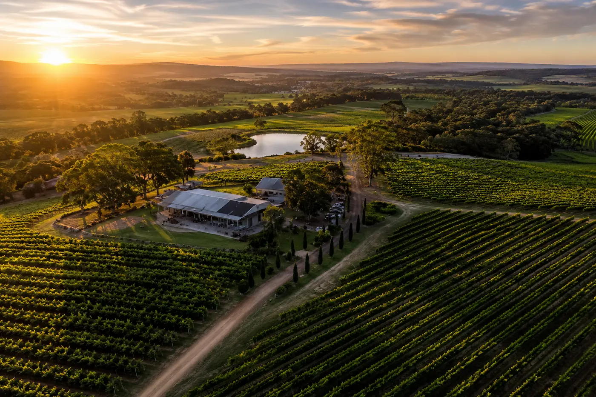
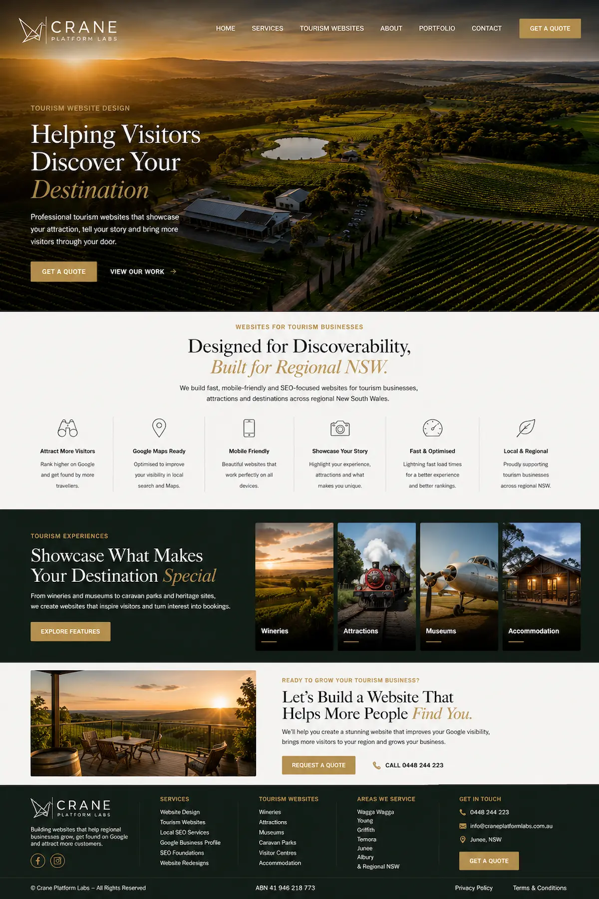
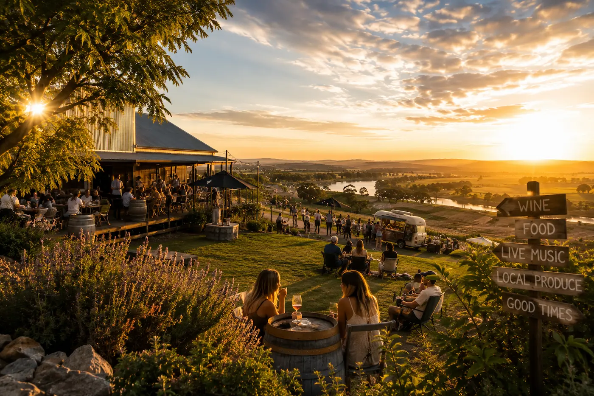

AFFORDABLE TOURISM WEBSITE DESIGN
Tourism Websites Built to Help
Regional NSW Attractions Get Found
Crane Platform Labs builds fast, affordable and mobile-friendly tourism websites for tourist attractions, museums, wineries, visitor centres, accommodation providers and tourism businesses across regional NSW.
Designed to help regional NSW tourism businesses improve Google visibility, attract more visitors and help travellers discover local attractions, experiences and destinations online. Tourism operators looking for stronger local visibility can also explore our Website Design Wagga Wagga page covering SEO-focused business websites and Google Maps visibility for Riverina businesses.
Supporting tourism operators, visitor attractions and regional tourism businesses across NSW


BUILT FOR GOOGLE SEARCHES
Most Travellers Search Online Before Visiting Regional NSW Attractions
Whether someone is searching for things to do in Young, attractions near Wagga Wagga, wineries in Griffith, museums in Temora or visitor experiences across regional NSW, most travellers discover tourism businesses through Google searches and Google Maps.
Tourism businesses now rely heavily on online visibility. Before visiting an attraction, travellers usually search online to view opening hours, directions, reviews, photos and visitor information. If your website is outdated, difficult to use or missing from Google searches, many visitors may never discover your attraction at all.
Many regional NSW tourism websites are slow, not mobile-friendly or poorly optimised for local SEO. This makes it harder for wineries, museums, accommodation providers, visitor attractions and tourism operators to compete online and attract travellers searching for things to do and local experiences.
Your website now plays a major role in whether travellers trust your attraction and decide to visit. A clean, professional and mobile-friendly tourism website helps improve Google visibility, build visitor confidence and make it easier for people to discover regional NSW destinations online.
We build affordable tourism websites designed specifically for regional NSW attractions, tourism operators, visitor centres, museums, wineries, accommodation providers and local tourism experiences wanting to improve online discovery and attract more visitors from Google searches.
From Wagga Wagga and Young to Griffith, Temora, Junee, Albury and surrounding regional NSW communities, we help tourism businesses improve their online presence, support local tourism growth and become easier for travellers to find online.
Every tourism website we build is designed to load quickly, work perfectly on mobile devices and help regional NSW tourism businesses improve their Google rankings, Google Maps visibility and local SEO performance.

TOURISM WEBSITE FEATURES
Everything a Regional NSW Tourism Website Needs
We build affordable tourism websites designed to help regional NSW attractions improve Google visibility, attract more visitors and provide a better online experience for travellers searching online.
Every tourism website we build is designed to support Google rankings, mobile usability, visitor trust and local SEO visibility while helping regional NSW attractions become easier for travellers to discover online through Google searches and Google Maps.
Whether you operate a winery, museum, visitor attraction, accommodation business, caravan park, heritage site or tourism experience, your website should clearly showcase your destination while helping travellers easily access important information online.
Fast-loading pages, mobile-friendly layouts and clear visitor information all play an important role in helping tourism businesses attract more visitors and improve online discovery across regional NSW.
Our tourism websites are built for travellers searching for things to do, local attractions, wineries, accommodation and visitor experiences across Wagga Wagga, Young, Griffith, Temora, Junee, Albury and surrounding regional NSW communities.
Built for Google Search
SEO-focused tourism websites designed to improve visibility in Google searches for attractions, wineries, museums, accommodation, visitor experiences and things to do across regional NSW.
Mobile-Friendly for Travellers
Built for travellers searching on their phones for local attractions, tourism experiences, visitor information and regional NSW destinations while travelling.
Fast Website Performance
Fast-loading tourism websites designed to improve visitor experience, reduce lost traffic and help travellers quickly access important information online.
Google Maps Integration
Designed to support Google Maps visibility and help travellers easily locate wineries, museums, accommodation providers and tourism attractions across regional NSW.
Professional Tourism Branding
Clean, modern tourism websites designed to showcase attractions professionally, strengthen visitor confidence and improve trust online.
Affordable & No-Fuss
Affordable tourism website design for regional NSW tourism businesses without expensive agency pricing, unnecessary complexity or bloated websites.
Caravan Park Websites
Tourism websites designed for caravan parks, riverside accommodation and holiday parks across regional NSW and the Riverina.
Winery & Food Tourism Websites
Professional tourism websites for wineries, cellar doors, food experiences and regional tourism destinations designed to improve Google visibility and visitor enquiries.
Museums & Attractions
Tourism websites for museums, heritage attractions, visitor centres and tourism experiences designed to help travellers discover regional NSW attractions online.

FAQ
Tourism Website Design Questions
Common questions about tourism website design, Google visibility and attracting more visitors online across regional NSW.
Tourism businesses rely heavily on Google visibility, strong mobile usability and clear visitor information to help travellers discover attractions, wineries, museums and experiences online before visiting.
Can a tourism website help attract more visitors?
Yes. A professional tourism website helps travellers discover your attraction through Google searches, Google Maps and tourism-related searches for things to do across regional NSW.
Why is local SEO important for tourism businesses?
Most travellers search online for attractions, wineries, museums, accommodation and local experiences before visiting an area. Local SEO helps improve your visibility in Google searches and Google Maps.
Are your tourism websites mobile-friendly?
Yes. Every tourism website we build is fully mobile-friendly and designed for travellers searching on phones while exploring regional NSW destinations.
Can you help tourism businesses appear on Google Maps?
Yes. We build websites designed to support Google Maps visibility, local SEO and improved online discovery for tourism businesses across regional NSW.
Do wineries, museums and attractions need websites?
Absolutely. Many visitors search online before travelling, so a professional website helps attractions provide information, build trust and attract more visitors from Google searches.
What makes a good tourism website?
A good tourism website should load quickly, work well on mobile devices, clearly explain the attraction and help travellers easily find visitor information, opening hours, directions and booking details.
Do you redesign outdated tourism websites?
Yes. Many regional NSW tourism websites are outdated or difficult to use. We redesign tourism websites to improve Google visibility, mobile usability and visitor experience.
Do you build affordable tourism websites?
Yes. We focus on affordable tourism website design for regional NSW attractions, visitor experiences and tourism businesses without expensive agency pricing.
WEBSITE PERFORMANCE
Built For Performance, Accessibility & SEO
Crane Platform Labs builds fast, mobile-friendly and SEO-focused websites designed to improve Google visibility, accessibility, usability and customer trust across regional NSW.
Modern websites should not only look professional but also perform properly across Google Search, mobile devices and modern accessibility standards.
Our websites are built using clean semantic HTML, responsive layouts, lightweight code and SEO-friendly structure designed to support fast loading performance, mobile usability and long-term online visibility.
Tourism operators and regional NSW businesses looking for stronger local visibility can also explore our Website Design Wagga Wagga page covering SEO-focused business websites, Google Maps visibility and local search optimisation.
From tourism websites and local business websites to tradie and regional NSW service websites, we focus on balancing modern design with accessibility, usability, SEO and modern web best practices.
Learn why website performance, accessibility, mobile usability and SEO now play a major role in Google rankings, customer experience and long-term business growth online. Businesses comparing DIY platforms with professionally developed websites can also read our Website Builder vs Business Website guide.